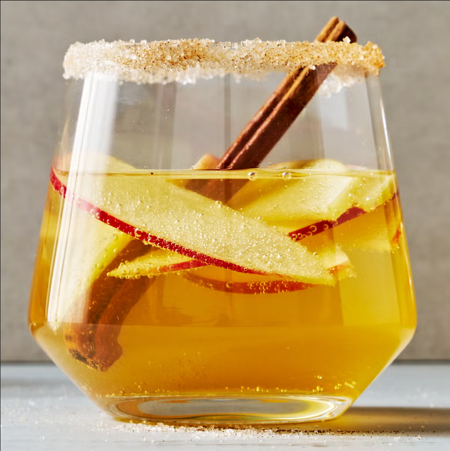

Apple Cider Sangria

Description
The perfect Thanskgiving coctail that will keep guests coming back for more.
Ingredients
- 1 lemon wedge
- 1/4 cup cinnamon-sugar
- 1 24-oz bottle sparkling cider, chilled
- 1 bottle sweet white wine, chilled
- 1/3 cup Fireball Whiskey
- 2 apples, thinly sliced
-
- Cinnamon sticks for serving
Instructions
- Rim each glass with a lemon wedge and dip in cinnamon sugar.
- In a large pitcher, combine cider, wine, and Fireball. Add sliced apples and stir to combine.
- Server into prepared glasses and garnish with an apple slice and cinnamon stick.